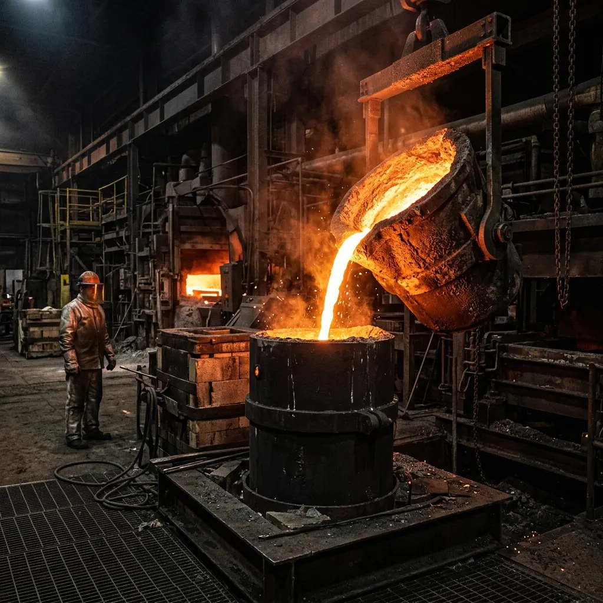
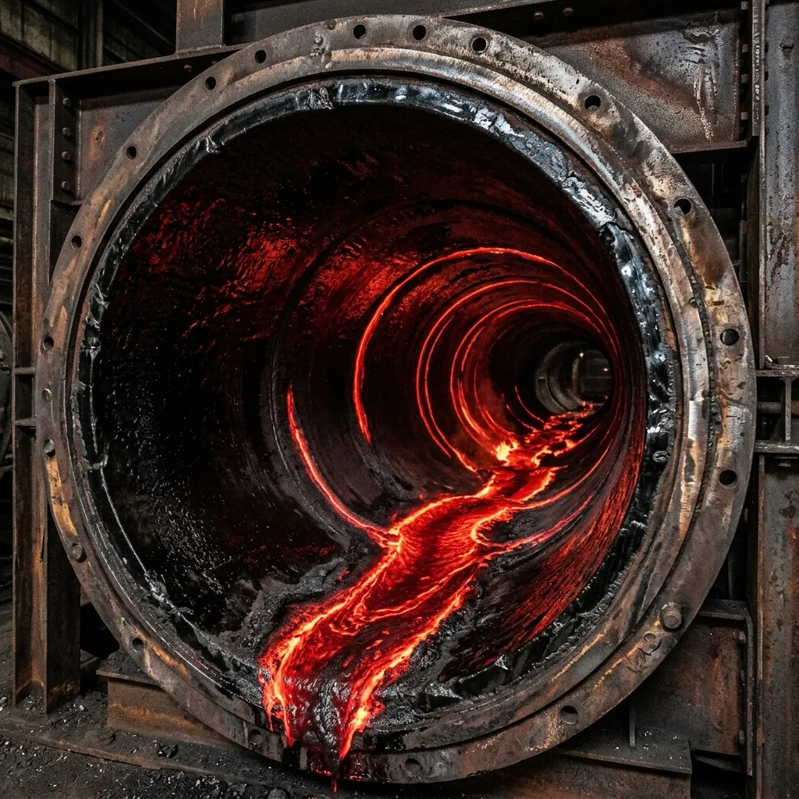
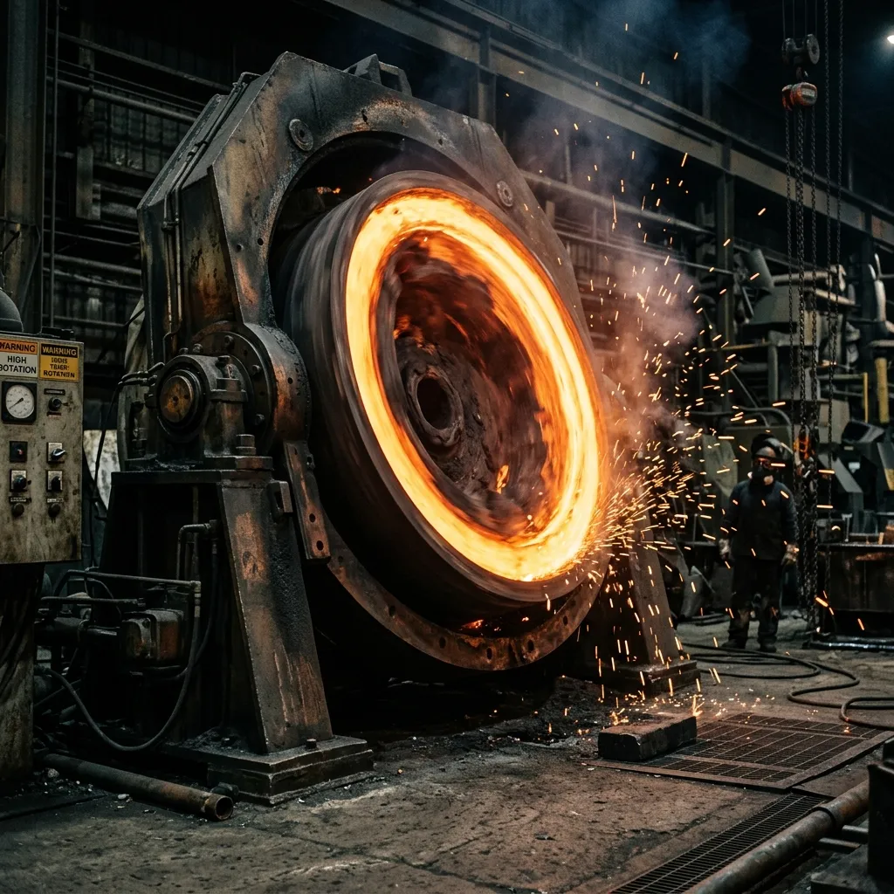

Steel Corrodes.
Polymer Melts.
Basalt Endures.
Direct-cast liquid volcanic rock engineered for the world's most aggressive sub-surface acid environments.
Mining engineers spent the twentieth century pretending that stainless steel wouldn't dissolve when bathed in pH 1.5 subterranean drainage. It does, and replacing three kilometres of rusted pipe five hundred meters underground is an exercise in ruinous operational downtime. We solve this not through complex metallurgy, but by heating raw volcanic basalt to fourteen hundred degrees Celsius and pouring molten stone where steel fails.
Why Re-Invent Metallurgy When the Crust Already Solved It?
The fundamental flaw of structural steel lies in its atomic desperation to return to iron oxide. Inject acidic mine runoff or copper slurry at high velocity, and the protective boundary layer strips away in weeks. Organic polymer liners fare little better, perishing under geothermal heat and abrasive quartz sand. Basalt, having already survived the convective mantle of the Earth, possesses no such chemical vulnerability. When spun centrifugally into dense vitrified pipes, its monocrystalline silicate structure registers an eight on the Mohs scale—yielding a surface that treats abrasive quartz like chalk.

In our Kuruman foundry, we do not alloy, temper, or apply sacrificial coatings. We take unrefined olivine basalt from deep-crust quarries, liquefy it inside closed electric arc furnaces, and cast it into components with zero internal voiding. The resulting mineral surface is entirely inert to sulfuric, hydrochloric, and nitric acids at virtually any concentration. Where maintenance crews accustomed to steel expect quarterly replacement cycles, our basalt installations quietly celebrate their third decade without a fraction of a millimetre of wall-thickness loss.
Mineral Performance Specifications & Lab Readouts
Independent laboratory verification confirming vitrified basalt outpaces high-chrome alloy steels across abrasion resistance, acid immunity, and compressive structural integrity.
Vitrified basalt presents a monocrystalline matrix that easily deflects quartz and granite particulates. High-chrome alloys peak at 6.5; our castings treat abrasive slurry as negligible friction.
Complete structural resistance to concentrated sulfuric and hydrochloric environments. The silicate bonds simply do not participate in acidic oxidation.
Handles immense deep-level lithostatic pressures without deformation.
Extreme mass density absorbs slurry pump cavitation noise, reducing shaft resonance by 80%.
Standard Cast Component Architecture
Heavy-wall, pre-engineered drop-in replacements for standard industrial flanged fittings. Available in standard nominal bores or bespoke casting dimensions.
The Sub-Arc Liquefaction Protocol
Precise thermal control turns chaotic volcanic rock into predictable structural ceramics. We do not manufacture this material; we merely organise its transition.

Optical Ore Sorting & Crushing
Raw olivine basalt is quarried locally and optically sorted to reject silica impurities, then crushed to a uniform 20mm aggregate for consistent thermal absorption.
1,450°C Electric Arc Melting
The aggregate enters sealed three-phase electric arc furnaces. Over four hours, it is reduced to a homogeneous, violently glowing liquid state, destroying any trace moisture.
3,000 RPM Centrifugal Pipe Casting
Molten stone is poured into rapidly spinning horizontal steel moulds. Centrifugal G-forces compress the liquid against the mould wall, eliminating all voids and creating extreme density.
24-Hour Annealing & Stress Relief
Castings are transferred to continuous annealing lehrs. A precise, 24-hour temperature step-down sequence aligns the crystalline structure and prevents thermal shattering.
Operational Logs from Extreme Depths
Field-tested in the deepest, wettest, and most acidic shaft systems across South Africa and Western Australia.
Zero wall-loss recorded after 14 years in continuous pH 1.8 copper slurry service."We were pulling steel pipe every six months. The maintenance downtime was costing us a fortune. We bolted in the MagmaLined spools in 2012, and our latest ultrasonic thickness test showed absolutely no degradation. The basalt treats the slurry like water."
Replaced failing polymers at 3,200m depth."Geothermal heat and acidic fissure water turned our polymer liners to brittle plastic within two years. The VulcanCollar basalt anchors have now held the main column secure for a decade. You can hit them with a hammer and they just ring."
Survived direct high-velocity quartz impact."A valve failure sent abrasive tailings through the line at three times design velocity. We assumed the bend would be blown out. The basalt liner wasn't even polished. It is frankly ridiculous material."
Technical & Metallurgical Enquiries
Addressing common engineering scepticism regarding structural ceramics and thermal shock.
What are the thermal shock tolerance ranges?
Basalt is a structural ceramic. While it excels at sustained high temperatures, instantaneous extreme temperature shifts can induce stress. However, our 24-hour annealing lehr process aligns the crystalline matrix, allowing MagmaLined pipes to handle a 150°C rapid shift without incident. For more extreme cyclic applications, we recommend external thermal jacketing.
What are the recommended joining methods?
Because you cannot weld stone on site, we cast our basalt liners inside an outer steel jacket. This allows for standard victaulic grooved couplings or heavy-duty welded steel-jacketed flanges. The flange face itself features a basalt rim to ensure the acidic fluid never touches the steel joint.
How does it handle impact resistance against heavy rockfall?
Unprotected cast basalt has high compressive strength but lower tensile impact resistance than steel. This is why all our subterranean shaft pipes are supplied as a composite: the inner basalt liner handles the acid and abrasion, while the outer carbon steel casing absorbs mechanical impacts and rockfalls.
What are the lead times for custom casting molds?
Bespoke geometries, such as complex pump volutes or non-standard elbows, require custom sand-resin moulds. Thanks to our in-house pattern shop, lead times for custom castings are typically four to six weeks, rather than the months required by overseas high-chrome alloy foundries.
How does the cost lifecycle compare over 10 years?
The capital expenditure for MagmaLined pipes is roughly double that of standard schedule 80 carbon steel. However, because the operational expenditure (maintenance, replacement, downtime) is effectively zero, the break-even point in highly acidic environments is typically reached by month fourteen.